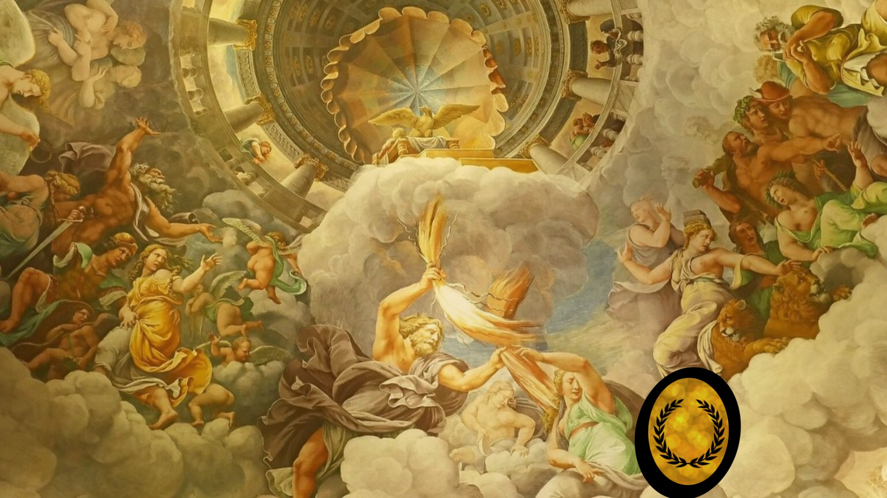

$row['id'],
"pontuacao" => $row['pontuacao'],
"idJogador" => $row['jogador_id']
);
}
function compararDecrescente($a, $b) {
if ($a['pontuacao'] == $b['pontuacao']) {
return 0;
}
return ($a['pontuacao'] < $b['pontuacao']) ? 1 : -1;
}
usort($objetosPartida, 'compararDecrescente');
$idUsuario = '';
$qtdAcertos = '';
echo "";
echo "";
echo "
";
}
?>
| Colocação | "; echo "Nome | "; echo "Pontuação | "; echo ""; for ($c = 0; $c < count($objetosPartida); $c++) { $idNum = intval($objetosPartida[$c]['idJogador']); $consultaIdTabela = "SELECT apelido FROM jogador WHERE id = $idNum"; $resultadoNome = mysqli_query($conexao, $consultaIdTabela); if (!$resultadoNome) { die ("Erro: " . mysqli_error($conexao)); } $rowNome = mysqli_fetch_assoc($resultadoNome); $nome = $rowNome['apelido']; echo "
|---|---|---|
| " . $c + 1 . " | "; echo "" . $nome . " | "; echo "" . $objetosPartida[$c]['pontuacao'] . "/10 | "; echo "